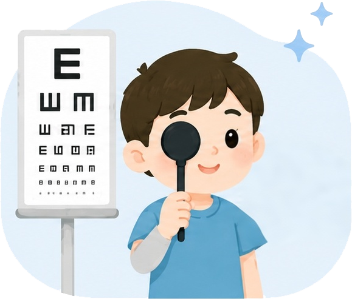
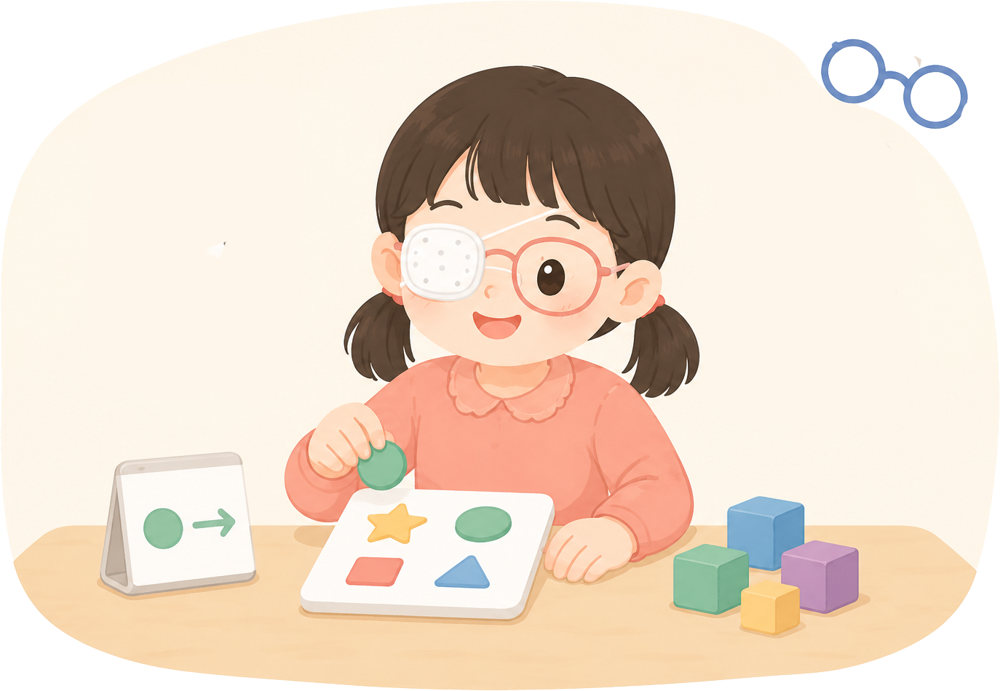
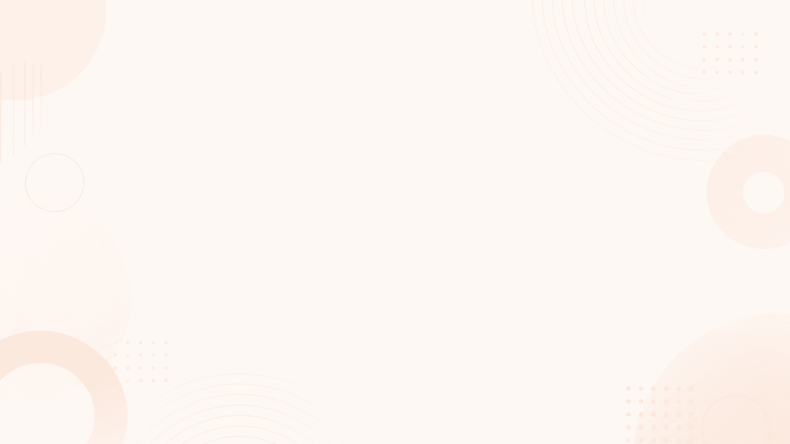

右眼大脑画面
两眼都清晰只使用右眼信息时，大脑形成的画面。
只使用右眼信息时，大脑形成的画面。
已对准
只使用左眼信息时，大脑形成的画面。
先改善视觉输入，再帮助弱视眼参与，并持续复查调整。


医生指导下进行限时遮盖，并配合弱视训练卡、穿珠子等精细视觉活动。
根据视力和双眼功能变化调整治疗强度和时长，不要擅自中断训练。

北京邮电大学智能交互设计专业是教育部批准设立的国内首个智能交互设计本科专业，入选北京市“一流本科专业”建设点，获评软科A+专业。面向国家“人工智能+”战略布局，专业构建“智能计算+交互创新”双核培养体系，持续引领智能产品设计与开发的前沿方向。